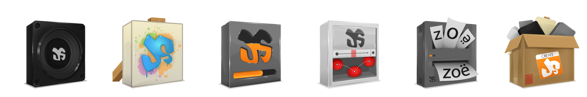
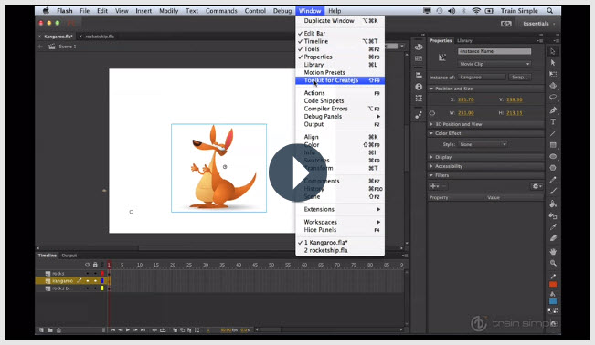

Create Amazing Interactive Content
With CreateJS

Who is Teresa Light?
Teresa Light and Associates create beautiful websites, mobile apps and games. Other passions include promoting a sustainable planet, and designing games.
I enjoy learning, and hold some degrees and certifications. I am active in the local San Diego tech community, including SanDiego.js. You can learn more at http://teresalight.com, or by following @Teresa_Light on Twitter.

Who is Joshua Smith?
I have been programing for over 5 years and now have an emphasis in Javascript. The Javascript community has become a second home and a passion, which I am very active in locally. I have fallen in love with developing with tools such as CreateJS and enjoy spending the day making awesome applications that make people say wow.
What is CreateJS?
CreateJS is a suite of libraries that enable rich interactive content on open web technologies via HTML5.
The libraries work independently, or mixed and matched.
They are: EaselJS, TweenJS, SoundJS, PreloadJS, and Zoë.
You will find them at createjs.com.

Explosive Growth
"Two months ago, the number of hits in a 30 day period increased 72% to 57M. One month ago, that number jumped by 60% to 91M hits. This month, it shot up an astounding 78% to reach 162M hits in 30 days. That’s an increase of over 5X in just 4 months!" CreateJS Blog
-
 3000+ Followers
3000+ Followers
- Comunity of 300
- 6271 Stars Total
Who Uses It...
PreloadJS
PreloadJS lets you manage and co-ordinate the loading of assets.
It controls page load speeds by chosing when to load what.
Works by reading an array of resources, then calling a function when complete
Preload Code Example
var assets =
[
{ id: "background", src: "backgrounds.png" },
{ id: "alabama-shape", src: "alabama-s.png" },
{ id: "alaska-shape", src: "alaska-s.png" },
{ id: "arizona-shape", src: "arizona-s.png" },
];
preload = new createjs.LoadQueue(false);
preload.addEventListener("progress", handleLoadProgress);
preload.addEventListener("complete", handleLoadComplete);
// Preload them
preload.loadManifest(assets);
EaselJS
EaselJS provides a straight forward, easy solutions for working with rich graphics and interactivity with the HTML5 Canvas.
Easy to use API's
Stage, Bitmaps, Text, Sprite Sheets, Ticker
Filters, Masks and Transformations
EaselJS Code Example
canvas = document.getElementById("soundJS");
stage = new createjs.Stage(canvas);
createjs.Ticker.addEventListener("tick", stage);
var graphic = new createjs.Graphics();
graphic.setStrokeStyle(1);
graphic.beginStroke(createjs.Graphics.getRGB(0,0,0));
graphic.beginFill(createjs.Graphics.getRGB(255,0,0));
graphic.drawCircle(50,50,50);
var circle = new createjs.Shape(graphic);
circle.x = 25;
circle.y = 50;
stage.addChild(shape);
TweenJS
TweenJS is for tweening and animating HTML5 and Javascript properties.
TweenJS Code Example
circle.alpha = 1;
createjs.Tween.get(circle)
.to({x:300}, 1000)
.call(function(){
//handle complete
});
SoundJS
SoundJS is for tweening and animating HTML5 and Javascript properties.
It works great cross platform.
SoundJS Code Example
createjs.Sound.registerSound({id:"sound", src:"tap.wav"});
.
.
.
circle.addEventListener('click', function(){
createjs.Sound.play("tick-sound");
});
Flash Toolkit for CreateJS
An optional extention to Adobe Flash CS6 software to export content for CreateJS.
Here is video to learn more:
https://tv.adobe.com/watch/learn-flash-professional-cc/creating-html5-content-with-createjs/
Case Study
Client: "Please build me a way to select a state?"
You could do a lame, boring solution..
- Alabama
- Alaska
- Arizona
- Arkansas
- California
- Colorado
- Connecticut
- Delaware
- Florida
- Georgia
- Hawaii
- Idaho
- Illinois
- Indiana
- Iowa
- Kansas
- Kentucky
- Louisiana
- Maine
- Maryland
- Massachusetts
- Michigan
- Minnesota
- Mississippi
- Missouri
- Montana
- Nebraska
- Nevada
- New Hampshire
- New Jersey
- New Mexico
- New York
- North Carolina
- North Dakota
- Ohio
- Oklahoma
- Oregon
- Pennsylvania
- Rhode Island
- South Carolina
- South Dakota
- Tennessee
- Texas
- Utah
- Vermont
- Virginia
- Washington
- West Virginia
- Wisconsin
- Wyoming
An immersive, interactive solution.
Our Twitters
Teresa Light: @teresa_light
Joshua Smith: @jpsmith1981
Slides Github
https://github.com/jpsmith1981/presentation-createjs
CreateJS People to Follow
The Framework ----> @createjs
CreateJS Lead ----> @grantskinner
Super Awesome ----> @derossi_s